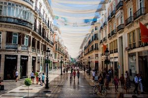

Sol, mar, gastronomía y Arte con mayúsculas
Bienvenidos a Málaga, una ciudad de Arte en la que, más allá del buen clima y las interminables playas,
podemos encontrar una de las ofertas culturales más completas del Mediterraneo.
La historia, el clima, la luz, una completa oferta de alojamiento a la medida de todos los bolsillos y la
buena mesa se alían en combinado irresistible.
Venga a Málaga... ¡no lo lamentará!.

Visite la calle Larios, el área comercial más elegante y animada de Málaga

Disfrute de su patrimonio fenicio, romano y árabe

Y tómese un respiro en una terraza junto al mar

Conozca nuestras tierras y tradiciones populares
Visite la calle Larios, el área comercial más elegante y animada de Málaga
Disfrute de su patrimonio fenicio, romano y árabe
Y tómese un respiro en una terraza junto al mar
Conozca nuestras tierras y tradiciones populares